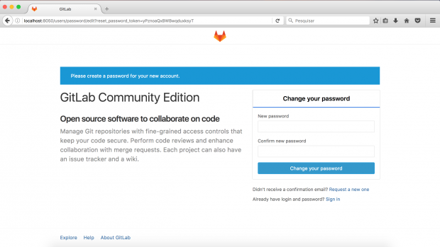
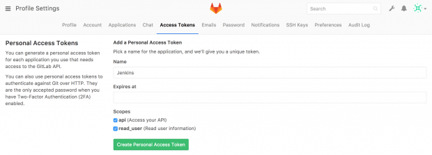
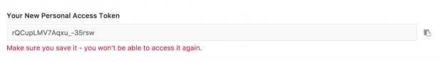

Gitlab Config.

Primeros pasos...
Al acceder a Gitlab, es necesario agregar configuraciones desde el dashboard para habilitar la comunicacion desde que se produce un commit jenkins comienza a trabajar depende el Pipeline que se asigne a cada proyecto para llevar acabo sus procesos desde la construccion de los Jar con maven al igual que la construccion de una imagen docker de el mismo o puede ser algun otro trabajo en otro lenguaje soportado por jenkins.
Comencemos...
Una vez estando dentro de nuestro espacio en gitlab, es necesario crear un access token con el cual tendremos que habilitarlo en jenkins para la comunicacion entre uno y otro. Esto se encuentra en las configuraciones de perfil donde se generara nuestro access token, como lo muestra la siguiente imagen:
Nos generara un token parecido a esto:
Este token generado se debe copiar a una credencial que a continuación sera creada en jenkins, es muy importante este paso ya que nos solicitara acceso con esta credencial. Agregar Credencial Token ------>